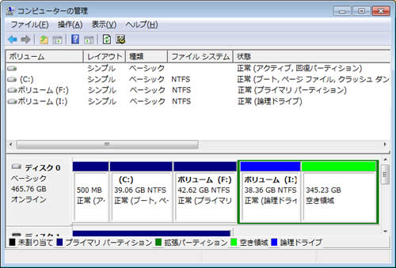
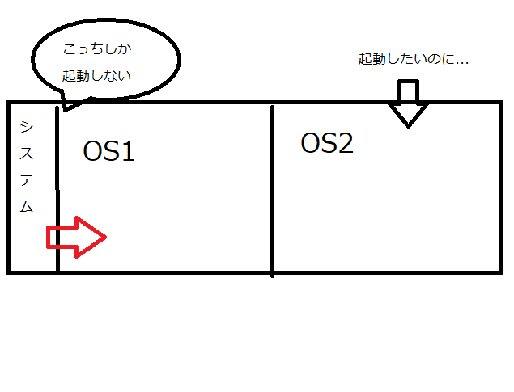
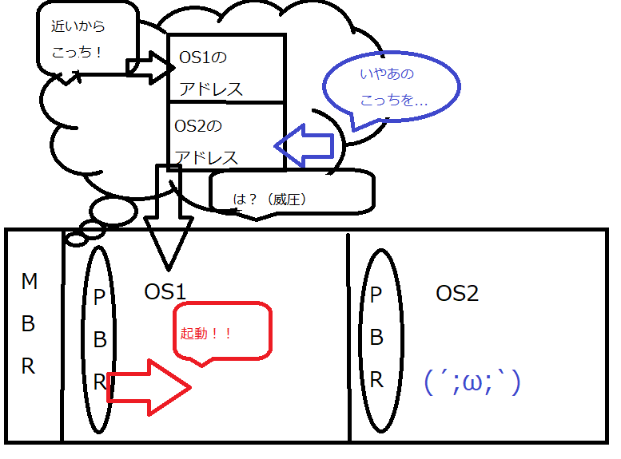
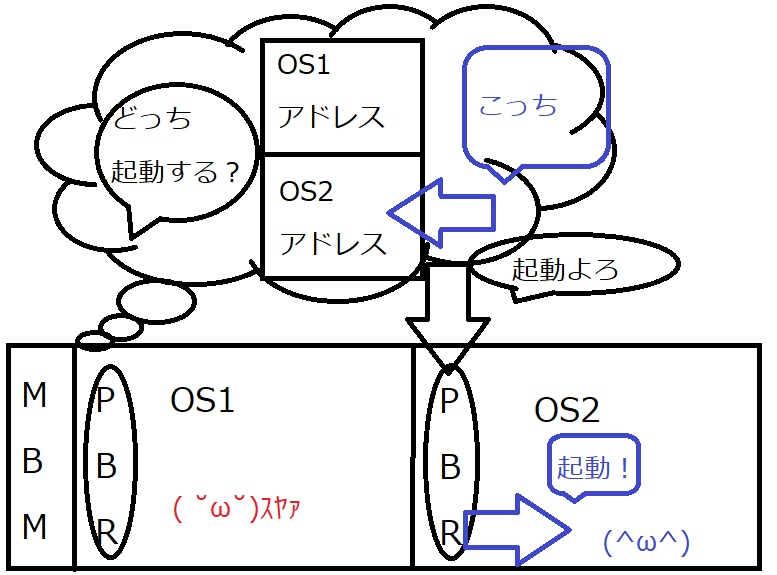
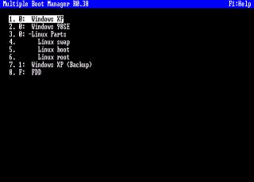

第１回 スーゼミまとめ
複数のOSをインストールする
OSを新たに追加でインストールする場合はOSをインストールするための
未割当パーティションを確保する必要がある
確保するためには、既存のOSに実装されている
ディスク管理プログラムを用いる。

緑の部分が未割当パーティション
PCにおけるパーティション:
ハードディスクの区画や領域のことッス
２段階ブート
通常、OSを複数導入し、ブートを行うと直近のOSをブートしてしまう。
※ブート：起動のこと(boot) わかりにくいネ！！
 こういうこと
このOS２を起動するために用いられるのが、２段階ブートと呼ばれる方法
２段階ブートするためには、
MBRと呼ばれる領域にMBMというプログラムをインストールしないといけない
すると、MBRから各OSのPBRのブートローダを選択できるようになる
MBR? MBM? PBR? ナニソレ...
以下MBR MBM PBR の説明だヨ！！
MBR
Master Boot Recorder の略デス
BIOS起動後に一番最初に読み込まれるハードディスク上の領域
ここにブートローダが記録されている
ブートローダ：起動に必要なプログラムや情報のことだヨ
ブートローダを読み込むことで、起動するOSのパーティションを参照し、
対象のパーティション上のPBRのブートローダよりOSを起動する
OSインストール時にインストールされるMBRのブートローダは
そのOSを起動するためのモノである
windowsを起動するのはwindows用のブートローダ...当たり前だネ
複数のOSをインストールした場合、何らかの手法を用いてマルチブートを可能にする必要がある
今、PCに一般的に入っているシステムはUEFIといって、マルチブートが普通にできるようになってるッス
一昔前のPCに入っているBIOSってやつにのみ対応しているシステムッス
PBR
Partition Boot Recordの略デス
パーティション上に存在するOS用のブートレコード
ブートレコード：起動時に読み込まれる記録部分...文字通りだネ！！
ここにOS用のブートローダが入る
MBRのブートローダからPBRを参照し、PBR上のブートローダからOSを起動する

マルチブートができないMBRだとこんな感じでOS2は起動できないヨ
MBM
Multiple Boot Managerの略デス
MBMを導入することで、通常のブートローダの処理に、
複数のブートローダの選択を可能にする処理を追加するブートローダの１種
これのおかげで、複数のOSの管理が可能になったヨ

選択できるからOS１もOS２も起動できるようになったネ

これがMBMの例だヨ.
いくつかのOSが選択できるようになってるネ
以下は説明途中で出てきたBIOS UEFIって何カナ？って人向けの説明だヨ
まとめた人間もあんまり理解できてないから、そこそこ適当になるッス
BIOS
Basic Input/Output Systemの略デス
PCの不揮発性メモリに格納されている、電源起動時に最初に起動するプログラム.
接続されている外部機器のチェックやMBRのブートローダを起動する.
BIOSに付属するMBRは、基本的に参照可能なパーティションの数や,
パーティションの容量に制限が存在し、BIOSごとにCPUの制限がある.
UEFI
Unified Extensible Firmware Interfaceの略デス
BIOSにとって代わる新しい管理システム
正確にはOSとファームウェアのやり取りの規格のことだけどネ
あ、ファームウェアの説明がいるカナ？
ファームウェア：電子機器に仕事をさせるために組み込む、制御用のプログラムのことだヨ
BIOSにはあった対応CPUの制限がなくなり、メモリを十分使えるようになった.
MBRやPBRといったブート用の領域が不要になり、ハードディスクの第１パーティションを、
UEFIのSDKによるアプリケーションやブートローダを保存するための領域としてフォーマットし、システムパーティションとする.
UEFI自体にブートマネージャーが存在し、ここにブートローダを登録することでマルチブートが可能になる.
何言ってるかさっぱりだネ！！ まあ、マルチブートが簡単になったってことだヨ
UEFIが参照するハードディスクのパーティションテーブルの規格としてGPTが存在する.
GUID Partition Tableの略デス
パーティションテーブルの配置に関する標準規格のことだヨ
一応パーティションテーブルについても説明するネ
パーティションテーブル：パーティションの情報が記録されている場所...のことだヨ
「パーティションは２つあって、一つはOS1、もう一つはOS2という名前」みたいなことが書かれていると思っておけばいいヨ
GPTはMBRと異なり、パーティションの最大数は１２８、容量の制限は実質存在しない
最大８ゼタバイトというふざけてるような数だからネ
現行のLinuxやFreeBSD等のUnix系OSでは大体BIOS及びUEFIの起動は可能だが、WindowsOSはUEFIかつ64bit限定での起動が可能
ただmacOSはできないッス
以上で第１回のスーパーユーザーセミナーのまとめを終了するヨ